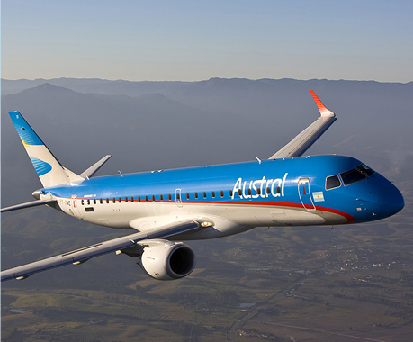

Saltar sobre la barra de navegación
austral.com
Español
|
Inglés
|
Portugués
|
Italiano
0810-222-VOLAR (86527)
Inicio
Nuestra Historia
Galería de imágenes y Flota
Historia de Austral Líneas Aéreas
AUSTRAL Compañía Argentina de Transportes Aéreos Comercial e Industrial (tal fue su denominación original), creada en 1957 con los auspicios de la Sociedad Anónima Importadora y Exportadora de la Patagonia, comenzó su tarea desde Aeroparque hacia el Sur Argentino en enero del 1958 con aeronaves Curtiss C-46, así como también vuelos de carga no regular a Miami (USA). En Junio de 1961 se inicia un proceso de fusión con ALA (Aerotransportes Litoral Argentino), naciendo Ala y Austral S.A., dando comienzo a una operación conjunta. En el año 1971 se alcanza una fusión completa de ambas empresas, pasando a denominarse AUSTRAL LINEAS AEREAS S.A. Los primeros Curtiss fueron reemplazados por Douglas DC-6 y en el año 1967 se modernizó la flota con los reactores BAC-111 y los turbo hélice japoneses Nihon YS11. En el año 1978 se incorporan los DC-9 serie 50; y en 1979 los YS-11 son desprogramados y vendidos a LAPA. A principios de la década del 80 se incorporan los primeros MD-80, siendo Austral una de las aerolíneas pioneras en la operación de este avión. Inicialmente Austral recibe tres aviones de la serie MD-81. Los dos primeros MD-83 se incorporan en 1991 y un tercero en 1992 que voló solo un tiempo, siendo luego transferido a Aerolíneas Argentinas, volviendo a la flota de Austral en marzo del 2005. Alrededor de 1980, Austral (AU) fue estatizada, de modo que junto con Aerolíneas otorgaran el monopolio de las rutas aeronáuticas de la Argentina. Sin embargo, en 1985 fue privatizada pasando a pertenecer al grupo Cielos del Sur S.A. Durante la gesta de Malvinas, en el año 1982, Austral realizó vuelos a las islas con aeronaves del tipo BAC-111, transportando personal y carga. En 1990 la aerolínea española Iberia y Cielos del Sur formaron un consorcio que ganó la privatización de Aerolíneas Argentinas, momento a partir del cual comenzó un gradual proceso de fusión entre Austral y Aerolíneas. En los ´90 se crea la empresa Inter-Austral, que operaba con aeronaves Casa 235, con base inicialmente en la provincia de Córdoba, realizando vuelos hacia las ciudades de Mendoza, Río Cuarto, San Rafael, Tucumán, Salta, Jujuy y Rosario. Hacia fines de la década los Casa pasaron a operar desde Buenos Aires. En los años 90’ también se incorporan en reemplazo de los BAC 111, ocho aeronaves Douglas DC-9-32, con una capacidad de 105 pasajeros, los que fueron reemplazados por aeronaves del tipo Boeing 737-200 (108 pasajeros) provenientes de Air France, hacia fines de esa década. En el año 2001, las empresas se hallaron prácticamente en la bancarrota, lo que llevó a la venta de ambas aerolíneas al Grupo Marsans. En junio y octubre de 2004, gracias al proceso de renovación y expansión de flota que implementó la empresa, se recibieron dos unidades del modelo MD83 proveniente el primero de la quebrada Flying Finn y el segundo de Spirit Airlines. En abril de 2005 se recibió otro MD-83 también proveniente de Flying Finn y actualmente la Empresa cuenta con distintos modelos de esta aeronave destacándose las variantes MD-81/83/88. Posteriormente, y a efectos de economizar en mantenimiento repuestos instrucción y capacitación, se transfieren a Aerolíneas Argentinas los ocho Boeing 737, y se reciben de ésta última seis aeronaves MD 83/88. En la actualidad Austral Líneas Aéreas, integrante del grupo Aerolíneas Argentinas cuenta con una flota de 18 MD-serie 80, los cuales seràn reemplazados paulatinamente por los aviones Embraer a partir del mes de septiembre, para cumplimentar con las rutas de cabotajes y vuelos regionales con que cuenta la compañía y continuar así con lo propuesto por el Grupo Empresarial y culminar con una monoflota (todos aviones del mismo tipo). En la actualidad la Empresa ha iniciado un proceso de argentinización tendiente a reparar carencias procedentes de anteriores gestiones y jerarquizar a la compañía, volviendo a ocupar un rol protagónico e independiente en el escenario aerocomercial nacional y regional aprovechando los 50 años de experiencia con que cuenta Austral L.A.
